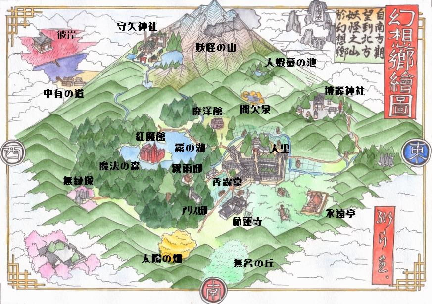

東方Project（日語：東方プロジェクト・とうほうぷろじぇくと，英語：Touhou Project，Project Shrine Maiden），簡稱東方，或稱東方系列，是日本的同人社團「上海愛麗絲幻樂團」
（ZUN）所製作的一系列以彈幕射擊遊戲為主的遊戲，並衍生有漫畫、小說等作品。
其自成一派的世界觀，個性鮮明的各種角色，精心排列設置的幾何狀彈幕，為每位角色、每個場合設計的風格多變的音樂，在愛好者之間有著非常高的人氣。
又因為製作方上海愛麗絲幻樂團（ZUN）對二次創作限制條件較少、管理較為寬鬆的緣故，不少愛好者為其製作了大量的二次創作作品，例如音樂、漫畫、小說、動畫、插圖、遊戲、MAD等，形成了種類繁多的二次創作潮流。
在niconico上與偶像大師、VOCALOID並稱為「御三家」。
截至目前，東方Project在niconico上的相關創作視頻總播放量已經達到45億以上，在nico僅次於VOCALOID系列，而東方Project相關作品在Youtube等國際影音網站上也廣受熱議，一度引發熱潮。
東方Project的故事發生在虛構世界「幻想鄉」(幻想郷げんそうきょう，Gensoukyou)，意思為幻想的大地或樂園的大地） 是作為東方系列故事上演舞台的虛構地點。此處的文化風俗類似於封建時代的日本，並攙雜許多日本民間傳說的元素。
幻想鄉起初僅僅被稱為「東之國中遠離人里的邊境之地」。是以日本東北及四國為原型的地區， 於古代幻想鄉並未以結界將內外分離。一個人煙稀少、有各種非人生物和妖怪出沒的區域，許多勇士為了驅除、消滅妖怪而來到幻想鄉。
人類與妖怪間斷斷續續的戰鬥持續。因人類的急速發展，博麗大結界建立，把幻想鄉從逐漸科學化、懷疑精神存在的現代社會隔離開來；以平衡妖怪與人類的勢力。從那時開始，幻想鄉就與現實世界幾無接觸了目前唯一為人所知 ，可溝通幻想鄉與現實世界的門戶，就是孤零零的座落在極東深山中、結界邊境處的博麗神社。ZUN表示幻想鄉之所以設在現代，是因這樣較容易，如果設定在過去時代，那就必須去鑽研那個時代的歷史
幻想鄉住民以妖怪為主，人類與動物也生活其中。許多住民原本在外界無處容身─如同在外界，自然黑暗已不復存在一樣使他們出於逃亡躲藏或尋找庇護目的進入幻想鄉。
東方Project遊戲劇情主要集中於異變解決，偶然發生的異常事件被稱為「異變」。異變會對整個幻想鄉的秩序造成影響，因此博麗神社的巫女會前往解決異變。 通常情況下妖怪們一時興起或出於好奇就會引發異變，隨後異變會被博麗的巫女退治，而異變的元兇也會受到懲罰。不過也有異變之外的事件，例如《風神錄》講述外來者意圖奪取幻想鄉信仰的故事。